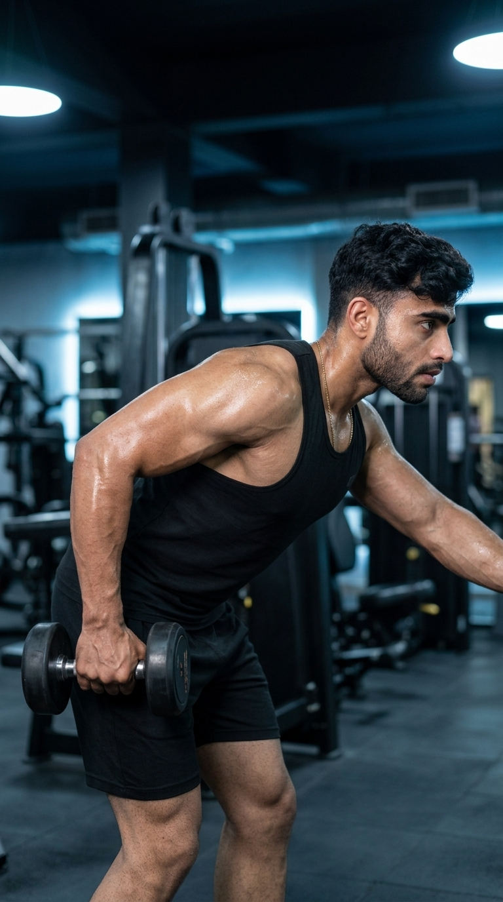

Primary Muscle
Triceps Brachii
Isolate and Sculpt Your Triceps for Stronger, More Defined Arms
The Dumbbell Triceps Kickback is an effective isolation exercise that targets all three heads of the triceps, with a strong emphasis on peak contraction at full elbow extension. Performed with a dumbbell and proper body positioning, this movement helps increase arm definition, improve elbow extension strength, and build balanced upper-arm muscle development. Its controlled range of motion and constant focus on the triceps make it an excellent addition to any arm-training routine.

Triceps Brachii
Dumbbell
Beginner
Isolation
Discover which muscles power the Dumbbell Triceps Kickback and how the supporting muscles work together to stabilize the shoulder and upper body while producing powerful elbow extension and maximum triceps contraction.
Long Head, Lateral Head & Medial Head
Shoulder Stabilization
Grip Stability
Torso Stability
Discover how the Dumbbell Triceps Kickback isolates the triceps, improves arm definition, enhances elbow extension strength, and builds stronger, more balanced upper arms through controlled resistance training.
The Dumbbell Triceps Kickback places direct tension on all three heads of the triceps, making it one of the best isolation exercises for arm development.
Consistent training helps create leaner, more defined triceps by emphasizing peak muscle contraction during every repetition.
Strengthening the triceps improves elbow extension, helping you perform pressing exercises with greater power and control.
Training each arm individually helps correct muscle imbalances while promoting symmetrical triceps growth and strength.
The controlled movement allows you to focus on squeezing the triceps, improving muscle activation and training efficiency.
Requiring only a dumbbell, this exercise is easy to perform at home or in the gym and fits into almost any upper-body or arm workout routine.
Follow these step-by-step instructions to perform the Dumbbell Triceps Kickback with proper body position, controlled movement, and full elbow extension to maximize triceps activation safely and effectively.
Hold a dumbbell in one hand and hinge forward at your hips with a flat back. Bend your working elbow to approximately 90 degrees and keep your upper arm close to your torso.
Brace your core to keep your back stable throughout the movement.
Extend your elbow until your arm is fully straight behind you while keeping your upper arm fixed in position.
Move only your forearm while keeping your elbow stationary.
Pause briefly at full extension and contract your triceps as hard as possible before lowering the weight.
Focus on muscle contraction instead of moving the weight quickly.
Slowly return the dumbbell to the starting position without allowing your elbow or shoulder to move excessively.
Control the lowering phase to maximize muscle tension.
Complete the desired repetitions with one arm, then switch sides while maintaining the same controlled technique and full range of motion.
Use a weight you can control without swinging your torso or shoulder.
Avoid these common technique mistakes to maximize triceps activation, improve arm strength, and perform the Dumbbell Triceps Kickback safely and effectively.
Swinging the upper arm instead of keeping it fixed reduces triceps isolation and shifts the workload to the shoulders.
Keep your upper arm parallel to your torso and allow only your forearm to move.
Heavy dumbbells often lead to swinging, poor technique, and reduced triceps activation.
Choose a weight that allows full control and proper technique throughout every repetition.
Stopping short of full elbow extension reduces the triceps contraction and limits muscle development.
Fully straighten your arm and squeeze your triceps briefly at the top of each repetition.
Performing fast, uncontrolled repetitions decreases time under tension and makes the exercise less effective.
Use a slow, controlled tempo during both the lifting and lowering phases to maximize triceps activation.
Apply these expert coaching cues to improve your Dumbbell Triceps Kickback technique, maximize triceps activation, and build stronger, more defined arms with every repetition.
Your upper arm should remain parallel to your torso throughout the movement while only your forearm performs the kickback.
A stationary upper arm creates maximum triceps isolation.
Fully straighten your elbow and pause briefly at the top to maximize triceps contraction before lowering the dumbbell.
The strongest muscle contraction happens at full elbow extension.
Lift and lower the dumbbell slowly to keep constant tension on the triceps and improve muscle activation.
Controlled repetitions are more effective than fast, momentum-driven movements.
Select a dumbbell that allows full range of motion without swinging your torso or compromising proper technique.
Perfect form produces better long-term results than lifting heavier weights.
Progress from mastering proper Dumbbell Triceps Kickback technique to using heavier resistance while maintaining strict form, full elbow extension, and maximum triceps activation.
Master the hip hinge, neutral spine, and correct arm position before increasing the training load.
Stable posture, proper elbow position, and full range of motion.
Perform slow, controlled repetitions while keeping your upper arm stationary and focusing on complete triceps contraction.
Controlled tempo, strict isolation, and strong mind-muscle connection.
Gradually increase the dumbbell weight while maintaining perfect form and avoiding swinging or excessive body movement.
Progressive overload, muscle control, and proper technique.
Challenge yourself with heavier dumbbells, slower eccentric repetitions, paused contractions, or higher training volume while maintaining flawless technique.
Maximum triceps development, advanced strength, and consistent movement quality.
Find answers to common questions about Dumbbell Triceps Kickback technique, muscles worked, proper form, training frequency, and how to maximize triceps growth and arm strength safely and effectively.
Dumbbell Triceps Kickbacks primarily target the triceps brachii while the posterior deltoids, forearms, and core help stabilize the movement.
They isolate the triceps through a full range of motion, allowing you to achieve a strong muscle contraction and improve arm definition.
No. Keep your upper arm fixed alongside your torso. Only your forearm should move to maximize triceps isolation.
Yes. This beginner-friendly isolation exercise is easy to learn with light dumbbells, making it ideal for building triceps strength and improving technique.
For muscle growth, perform 3–4 sets of 10–15 repetitions. For endurance and muscle control, higher repetitions with lighter weights work well.
Yes. Performing the exercise one arm at a time helps improve mind-muscle connection, correct strength imbalances, and maintain better control throughout each repetition.
Explore other triceps exercises that complement the Dumbbell Triceps Kickback and help you build stronger, bigger arms through both compound and isolation movements using different equipment and training variations.


Continue building stronger, bigger triceps with step-by-step exercise guides covering proper technique, muscles worked, common mistakes, expert coaching tips, and progression strategies for every fitness level.